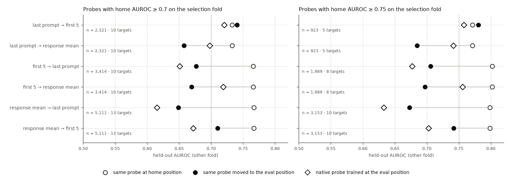
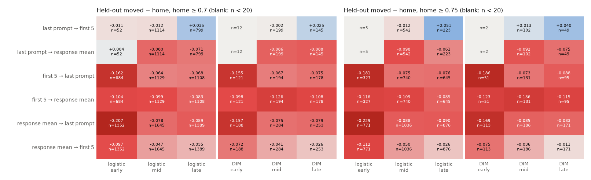
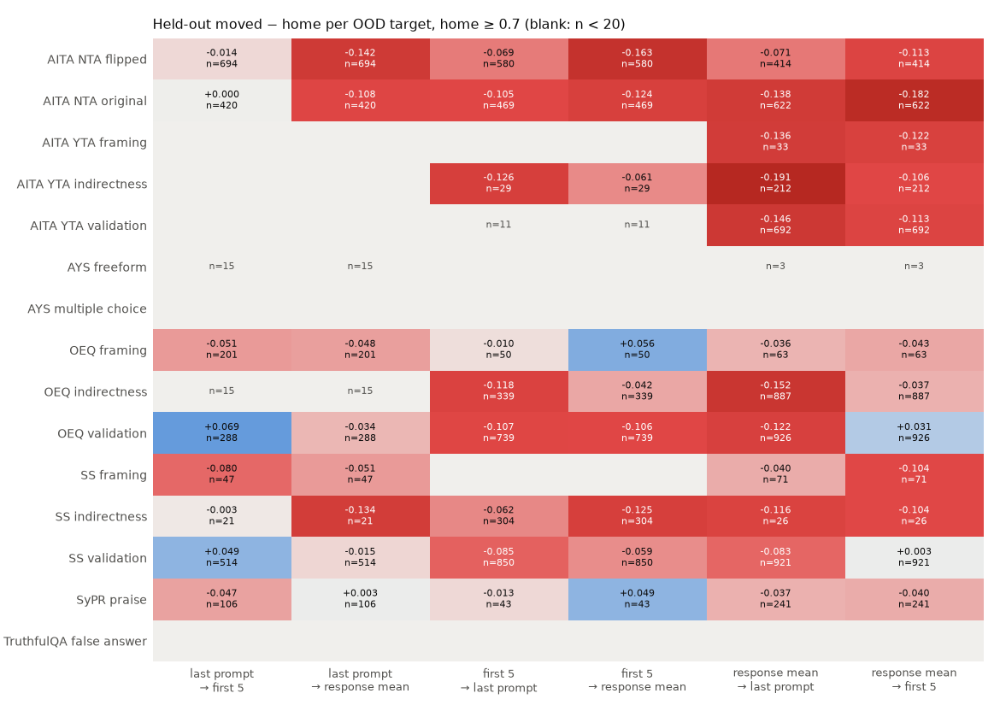

<title>Transfer on Strong Probes</title>
<link rel="preconnect" href="https://fonts.googleapis.com">
<link rel="preconnect" href="https://fonts.gstatic.com" crossorigin>
<link rel="stylesheet" href="https://fonts.googleapis.com/css2?family=IBM+Plex+Sans+Condensed:wght@500;600&family=IBM+Plex+Sans:ital,wght@0,400;0,500;0,600;1,400&family=IBM+Plex+Mono:wght@400;500&display=swap">
<style>
/* Layout: single reading column (~70ch) for prose; figures break out to a wider track; findings are numbered because the review cites them by number. Shares tokens with the other Step 1 reviews. */
:root {
  --bg: #f7f8fa;
  --surface: #ffffff;
  --ink: #14181f;
  --ink-2: #4a5160;
  --rule: #dde1e8;
  --accent: #104281;      /* the colormap's blue pole: AUROC near 1 */
  --anti: #b23434;        /* the colormap's red pole: AUROC near 0 */
  --chip: #e9eef6;
  --font-display: "IBM Plex Sans Condensed", "Arial Narrow", system-ui, sans-serif;
  --font-body: "IBM Plex Sans", system-ui, -apple-system, "Segoe UI", sans-serif;
  --font-data: "IBM Plex Mono", ui-monospace, "Cascadia Mono", Consolas, monospace;
}
@media (prefers-color-scheme: dark) {
  :root:not([data-theme="light"]) {
    --bg: #12151a; --surface: #1b1f26; --ink: #e8ebf0; --ink-2: #a9b0bd; --rule: #2d333d;
    --accent: #7fb0ec; --anti: #ef7a7a; --chip: #232a35; color-scheme: dark;
  }
}
:root[data-theme="dark"] {
  --bg: #12151a; --surface: #1b1f26; --ink: #e8ebf0; --ink-2: #a9b0bd; --rule: #2d333d;
  --accent: #7fb0ec; --anti: #ef7a7a; --chip: #232a35; color-scheme: dark;
}
* { box-sizing: border-box; }
body { background: var(--bg); color: var(--ink); font: 400 16px/1.6 var(--font-body); padding-inline: 16px; padding-block: 40px 72px; }
.page { max-width: 1180px; margin: 0 auto; display: grid; gap: 40px; }
.col { max-width: 70ch; min-width: 0; }
h1, h2, h3 { font-family: var(--font-display); text-wrap: balance; line-height: 1.15; margin: 0; }
h1 { font-size: clamp(2rem, 4.5vw, 2.9rem); font-weight: 600; letter-spacing: -0.01em; }
h2 { font-size: 1.55rem; font-weight: 600; padding-top: 18px; border-top: 1px solid var(--rule); }
h3 { font-size: 1.15rem; font-weight: 600; }
p, ul, ol { margin: 0; }
section { display: grid; gap: 16px; }
.eyebrow { font: 500 0.78rem/1.4 var(--font-data); letter-spacing: 0.08em; text-transform: uppercase; color: var(--ink-2); }
.lede { font-size: 1.12rem; color: var(--ink-2); }
.meta { display: flex; flex-wrap: wrap; gap: 8px; }
.meta span { font: 400 0.8rem/1.3 var(--font-data); background: var(--chip); padding: 5px 9px; border-radius: 4px; }
code, .num { font-family: var(--font-data); font-size: 0.9em; font-variant-numeric: tabular-nums; }
.num { white-space: nowrap; }
.hi { color: var(--accent); font-weight: 500; }
.lo { color: var(--anti); font-weight: 500; }
ul, ol { padding-left: 1.3em; display: grid; gap: 8px; }
.findings { list-style: none; padding: 0; counter-reset: f; gap: 28px; }
.findings > li { counter-increment: f; display: grid; grid-template-columns: 2.4rem minmax(0, 1fr); gap: 4px 12px; }
.findings > li::before { content: counter(f); grid-row: 1 / span 3; font: 600 1.5rem/1.1 var(--font-display); color: var(--accent); }
.findings > li > * { grid-column: 2; }
.findings h3 { margin-bottom: 2px; }
.findings p + p { margin-top: 8px; }
figure { margin: 0; display: grid; gap: 10px; min-width: 0; }
figure .frame { background: #ffffff; border: 1px solid var(--rule); border-radius: 6px; padding: 10px; overflow-x: auto; }
figure img { display: block; width: 100%; height: auto; min-width: 640px; }
figcaption { font-size: 0.9rem; color: var(--ink-2); max-width: 90ch; }
figcaption b { color: var(--ink); font-weight: 600; }
.grid3 { display: grid; grid-template-columns: repeat(auto-fit, minmax(300px, 1fr)); gap: 20px; }
.grid3 img { min-width: 0; }
.tablewrap { overflow-x: auto; border: 1px solid var(--rule); border-radius: 6px; background: var(--surface); }
table { border-collapse: collapse; width: 100%; font-size: 0.92rem; }
th, td { text-align: left; vertical-align: top; padding: 10px 14px; border-bottom: 1px solid var(--rule); }
tr:last-child td { border-bottom: 0; }
th { font: 600 0.78rem/1.3 var(--font-data); letter-spacing: 0.05em; text-transform: uppercase; color: var(--ink-2); background: var(--chip); }
td:first-child { font-weight: 600; white-space: nowrap; }
td.why { color: var(--ink-2); }
pre { margin: 0; font: 400 0.82rem/1.55 var(--font-data); background: var(--surface); border: 1px solid var(--rule); border-radius: 6px; padding: 14px 16px; overflow-x: auto; }
a { color: var(--accent); }
a:focus-visible { outline: 2px solid var(--accent); outline-offset: 2px; }
.answer { background: var(--surface); border: 1px solid var(--rule); border-radius: 6px; padding: 18px 20px; display: grid; gap: 10px; max-width: 78ch; }
.answer h2 { border: 0; padding: 0; font-size: 1.2rem; }
td.t { color: var(--ink-2); font-weight: 400; }
td.num, th.num { text-align: right; }
.swatch { display: inline-block; width: 10px; height: 10px; border-radius: 2px; margin-right: 6px; vertical-align: baseline; }
tr.band td { font: 600 0.78rem/1.3 var(--font-data); letter-spacing: 0.05em; text-transform: uppercase; color: var(--ink-2); background: var(--chip); }
</style>

<main class="page">
  <header class="col" style="display:grid; gap:14px;">
    <div class="eyebrow">SycoScope v2 · Step 1 analysis · 30 Sep 2026</div>
    <h1>Transfer on Strong Probes</h1>
    <p class="lede">The earlier pages averaged OOD AUROC over every probe and target, most of them near chance. This page keeps only the probe × target combinations where a probe works at its own position (AUROC ≥ 0.70 or ≥ 0.75) and asks whether it still works after moving to another token position.</p>
    <p>Earlier pages: <a href="https://claude.ai/artifact/T2bFyKzbSR8Rx7tCYEq6To">Last-Prompt Probes Across Positions</a> and <a href="https://claude.ai/artifact/TQA2UaDHBQg41JhBcFjaGg">Position Transfer Directions</a>.</p>
    <div class="meta">
      <span>Llama-3.1-8B-Instruct</span><span>synthetic_tefo_C_sweep</span><span>select on one half of each target, measure on the other</span><span>238,140 half-target AUROCs</span>
    </div>
  </header>

  <section class="answer">
    <h2>Short answer</h2>
    <ul>
      <li><b>For probes that work, moving them usually costs a lot.</b> At the 0.70 threshold, five of the six directions lose <span class="num">0.057–0.118</span> AUROC on held-out rows. The moved probe keeps 56–79% of its distance above chance. The pooled averages hid this because most probe × target combinations are near chance at every position.</li>
      <li><b>The exception is last prompt → first 5, which holds.</b> The moved probe scores <span class="num">0.740</span> against <span class="num">0.733</span> at home (0.781 vs 0.771 at the 0.75 threshold).</li>
      <li><b>The earlier ranking of directions still stands.</b> Moved response-mean probes still beat the native probes at the last prompt token and the first 5 tokens. Nothing moved onto the response mean beats probes trained there.</li>
    </ul>
  </section>

  <section>
    <h2 class="col">Findings</h2>
    <ol class="findings col">
      <li>
        <h3>Strong probes lose much of their signal when moved, except last prompt → first 5</h3>
        <p>At the 0.70 threshold, measured on the held-out half, the losses are: first 5 → last prompt <span class="num">−0.089</span>, first 5 → response mean <span class="num">−0.097</span>, response mean → last prompt <span class="num">−0.118</span>, last prompt → response mean <span class="num">−0.075</span>, and response mean → first 5 <span class="num">−0.057</span>. Last prompt → first 5 gains <span class="num">+0.008</span>. At the 0.75 threshold the pattern is the same (<span class="num">−0.056</span> to <span class="num">−0.125</span>, and <span class="num">+0.009</span>).</p>
        <p>Only 32–56% of moved probes stay at 0.70 or above on the held-out half. For home probes the figure is 78–85%, and for last prompt → first 5 it is 68%.</p>
        <p>The pooled pages said moving a last-prompt probe "changes little". That is true of the average, which is mostly near-chance probes that stay near chance. Where there is real signal, it survives in only one direction: last prompt → first 5.</p>
      </li>
      <li>
        <h3>The comparison with native probes is unchanged</h3>
        <p>Moved response-mean probes still beat the native probes at the other positions: <span class="num">0.710</span> vs <span class="num">0.672</span> at the first 5 tokens, and <span class="num">0.649</span> vs <span class="num">0.616</span> at the last prompt token. First 5 → last prompt also beats native (<span class="num">0.677</span> vs <span class="num">0.651</span>). Both directions onto the response mean lose to probes trained there: <span class="num">0.657</span> vs <span class="num">0.698</span> from the last prompt token, and <span class="num">0.669</span> vs <span class="num">0.719</span> from the first 5 tokens.</p>
        <p>So the conclusion from the companion page carries over: to score a position, a response-mean probe is usually the best choice. But moving it still gives up much of what it achieves at home.</p>
      </li>
      <li>
        <h3>Early layers: strong response and first-5 probes do not carry over to the last prompt token</h3>
        <p>In the early band (layers 3, 6, 10), response mean → last prompt keeps only 24% of its distance above chance (<span class="num">0.763</span> → <span class="num">0.562</span>, n = 1,540). First 5 → last prompt keeps 33% (<span class="num">0.740</span> → <span class="num">0.578</span>). In mid and late layers the same directions keep 67–77%.</p>
        <p>This is the OOD counterpart of the early-layer in-distribution failures on the companion page. Few last-prompt probes are strong at early layers (64 units), so the early band says little about the directions out of the last prompt token.</p>
      </li>
      <li>
        <h3>Last prompt → first 5 holds best in late layers; response mean → first 5 recovers in late layers</h3>
        <p>Last prompt → first 5 loses a little in mid layers (<span class="num">−0.011</span>) and gains in late layers (<span class="num">+0.034</span>; <span class="num">+0.049</span> at the 0.75 threshold). Response mean → first 5 shrinks from <span class="num">−0.094</span> (early) to <span class="num">−0.046</span> (mid) and <span class="num">−0.034</span> (late), and DIM in late layers is at <span class="num">−0.026</span>. Moves onto the response mean stay at <span class="num">−0.07</span> to <span class="num">−0.13</span> in every band from the first 5 tokens, and in mid and late layers from the last prompt token. They are slightly worse for DIM.</p>
      </li>
      <li>
        <h3>Per target, the picture is mixed, and the targets that transfer are the validation ones</h3>
        <p>Last prompt → first 5 holds because of OEQ validation (<span class="num">+0.069</span>) and SS validation (<span class="num">+0.049</span>), with the AITA NTA targets flat (<span class="num">−0.014</span>, <span class="num">0.000</span>) and SS framing and OEQ framing losing (<span class="num">−0.080</span>, <span class="num">−0.051</span>). Response mean → first 5 stays level on OEQ and SS validation (<span class="num">+0.031</span>, <span class="num">+0.003</span>) and loses <span class="num">0.10–0.18</span> on the AITA targets.</p>
        <p>No probe reaches 0.70 at any position on TruthfulQA false answer or AYS multiple choice, so those targets are absent here. Selection is dominated by AITA NTA, OEQ validation and indirectness, and SS validation (figure 3 gives counts).</p>
      </li>
    </ol>
  </section>

  <section>
    <h2 class="col">Figures</h2>
    <figure>
      <div class="frame"></div>
      <figcaption><b>Figure 1.</b> Held-out AUROC for selected units. Hollow circles are the probe at its own position, filled circles the same probe moved, and diamonds the probe trained at the eval position. Directions that share a training position share the same selected units.</figcaption>
    </figure>
    <figure>
      <div class="frame"></div>
      <figcaption><b>Figure 2.</b> Held-out moved − home by method and layer band. Cells with fewer than 20 selected units are blank and show their count.</figcaption>
    </figure>
    <figure>
      <div class="frame"></div>
      <figcaption><b>Figure 3.</b> Per OOD target at the 0.70 threshold, pooled over methods and layers. Cells with fewer than 20 units are blank.</figcaption>
    </figure>
  </section>

  <section>
    <h2 class="col">All directions</h2>
    <p class="col">Pooled over logistic, DIM and all layers. Retention is (moved − 0.5) / (home − 0.5), from the means. Differences of 0.02 or more are highlighted.</p>
    <div class="tablewrap">
      <table>
        <thead><tr><th>Trained → scored</th><th class="num">Units</th><th class="num">Targets</th><th class="num">Home</th><th class="num">Moved</th><th class="num">Native</th><th class="num">Moved − home</th><th class="num">Retention</th><th class="num">Moved ≥ threshold</th></tr></thead>
        <tbody>
<tr class="band"><td colspan="9">home AUROC ≥ 0.70 on the selection half</td></tr>
<tr><td>last prompt → first 5</td><td class="num">2,321</td><td class="num">10</td><td class="num">0.733</td><td class="num">0.740</td><td class="num">0.720</td><td class="num ">+0.008</td><td class="num">1.03</td><td class="num">68%</td></tr>
<tr><td>last prompt → response mean</td><td class="num">2,321</td><td class="num">10</td><td class="num">0.733</td><td class="num">0.657</td><td class="num">0.698</td><td class="num lo">-0.075</td><td class="num">0.68</td><td class="num">34%</td></tr>
<tr><td>first 5 → last prompt</td><td class="num">3,414</td><td class="num">10</td><td class="num">0.766</td><td class="num">0.677</td><td class="num">0.651</td><td class="num lo">-0.089</td><td class="num">0.66</td><td class="num">45%</td></tr>
<tr><td>first 5 → response mean</td><td class="num">3,414</td><td class="num">10</td><td class="num">0.766</td><td class="num">0.669</td><td class="num">0.719</td><td class="num lo">-0.097</td><td class="num">0.64</td><td class="num">41%</td></tr>
<tr><td>response mean → last prompt</td><td class="num">5,111</td><td class="num">13</td><td class="num">0.767</td><td class="num">0.649</td><td class="num">0.616</td><td class="num lo">-0.118</td><td class="num">0.56</td><td class="num">32%</td></tr>
<tr><td>response mean → first 5</td><td class="num">5,111</td><td class="num">13</td><td class="num">0.767</td><td class="num">0.710</td><td class="num">0.672</td><td class="num lo">-0.057</td><td class="num">0.79</td><td class="num">56%</td></tr>
<tr class="band"><td colspan="9">home AUROC ≥ 0.75 on the selection half</td></tr>
<tr><td>last prompt → first 5</td><td class="num">923</td><td class="num">5</td><td class="num">0.771</td><td class="num">0.781</td><td class="num">0.758</td><td class="num ">+0.009</td><td class="num">1.03</td><td class="num">70%</td></tr>
<tr><td>last prompt → response mean</td><td class="num">923</td><td class="num">5</td><td class="num">0.771</td><td class="num">0.685</td><td class="num">0.741</td><td class="num lo">-0.087</td><td class="num">0.68</td><td class="num">34%</td></tr>
<tr><td>first 5 → last prompt</td><td class="num">1,989</td><td class="num">8</td><td class="num">0.802</td><td class="num">0.706</td><td class="num">0.677</td><td class="num lo">-0.096</td><td class="num">0.68</td><td class="num">40%</td></tr>
<tr><td>first 5 → response mean</td><td class="num">1,989</td><td class="num">8</td><td class="num">0.802</td><td class="num">0.697</td><td class="num">0.756</td><td class="num lo">-0.105</td><td class="num">0.65</td><td class="num">36%</td></tr>
<tr><td>response mean → last prompt</td><td class="num">3,153</td><td class="num">10</td><td class="num">0.798</td><td class="num">0.673</td><td class="num">0.633</td><td class="num lo">-0.125</td><td class="num">0.58</td><td class="num">24%</td></tr>
<tr><td>response mean → first 5</td><td class="num">3,153</td><td class="num">10</td><td class="num">0.798</td><td class="num">0.742</td><td class="num">0.703</td><td class="num lo">-0.056</td><td class="num">0.81</td><td class="num">53%</td></tr>
        </tbody>
      </table>
    </div>
  </section>

  <section>
    <h2 class="col">Design choices</h2>
    <div class="tablewrap">
      <table>
        <thead><tr><th>Choice</th><th>What was done</th><th>Why</th></tr></thead>
        <tbody>
          <tr><td>Select on one half, measure on the other</td><td>Each OOD target's rows are split into two halves. A probe × target is selected on one half and all its numbers are read from the other; this is done both ways round.</td><td class="why">Selecting and measuring on the same rows favours probes that were lucky on those rows. The moved scores would then look worse just by comparison. On the selection half, home is <span class="num">0.009–0.019</span> higher than on the held-out half, which is the size of that effect.</td></tr>
          <tr><td>How the halves are made</td><td>Whole groups (the <code>group</code> field) go to one half. Groups are shuffled with seed 0, sorted by their share of label-1 rows, and assigned alternately.</td><td class="why">Rows of one group (SyPR up to 23 rows, TruthfulQA up to 3) never appear in both halves, and each half is label-balanced within 1–2%. Fold sizes are in the meta file.</td></tr>
          <tr><td>What gets selected</td><td>The probe's AUROC at its own training position ("home"). Thresholds are 0.70 and 0.75, as you asked. Only AUROC above the threshold counts; inverted probes (AUROC ≤ 0.30) are not selected.</td><td class="why">"The probe performs well" was read as working at its own position. Inverted probes would need a separate sign convention.</td></tr>
          <tr><td>Unit</td><td>Probe × target × selection half. A probe × target can count twice, once per half.</td><td class="why">This uses both halves for measurement. Units are not independent: C values give near-identical probes, nearby layers are correlated, and all units on a target share its rows. The n values are counts, not effective sample sizes.</td></tr>
          <tr><td>Native reference</td><td>The probe of the same pair, setting and layer trained at the eval position, on the same held-out half. It is not itself selected.</td><td class="why">It answers whether a probe trained at that position would do better on these combinations.</td></tr>
          <tr><td>Retention</td><td>(mean moved − 0.5) / (mean home − 0.5).</td><td class="why">A 0.05 loss means more for a probe at 0.70 than for one at 0.90. Retention compares the loss with how much signal there was.</td></tr>
          <tr><td>Pooling</td><td>Logistic and DIM pooled in the headline figures and split in figure 2. Same layer bands as the companion page.</td><td class="why">Splitting everything gives cells with too few units. Figure 2 shows where the split matters.</td></tr>
          <tr><td>Minimum cell size</td><td>Cells in figures 2 and 3 with fewer than 20 units are blank (<code>--min-units 20</code>).</td><td class="why">Small cells come from a few probes on one target and are unstable.</td></tr>
          <tr><td>New scoring</td><td>AUROCs were recomputed per half with a vectorised rank formula. The same code on all rows reproduces <code>cross_position.csv</code> (largest difference <span class="num">2.2e-16</span>), and the script fails above 1e-9.</td><td class="why">The halves are new numbers, so they needed their own check.</td></tr>
        </tbody>
      </table>
    </div>
  </section>

  <section class="col">
    <h2>Caveats</h2>
    <ul>
      <li>Directions with different training positions are selected on different probe × target sets (for example 10 targets for the last prompt token and 13 for the response mean). Compare directions that share a training position most directly.</li>
      <li>Half-target AUROCs are noisier than full-target ones. AITA NTA original has only 84 rows per half.</li>
      <li>Selection picks the combinations with the most signal, which are mostly validation and AITA targets. Other targets have no probe that works well, so this page says nothing about them.</li>
      <li>These are point estimates with no confidence intervals. Effects of 0.02 or less should not be read as real.</li>
    </ul>
  </section>

  <section class="col">
    <h2>Files and reproduction</h2>
    <p>The code is <code>probe_analysis/cross_position/compute_split.py</code> (scoring, about 2 minutes on CPU) and <code>strong_probes.py</code> (analysis). Row selection and probe loading are shared with <code>compute_cross_position.py</code>. The outputs are in <code>reports/llama31_tefo_cross_position/strong_probes/</code>: <code>split_auroc.csv</code> (238,140 rows), <code>strong_by_direction.csv</code>, <code>strong_by_target.csv</code> and figures 01–03, each with a <code>meta/*.meta.json</code>.</p>
<pre>uv run python -m probe_analysis.cross_position.compute_split \
  --sweep-dir probes/Llama-3.1-8B-Instruct/synthetic_tefo_C_sweep \
  --targets reports/llama31_tefo_probe_transfer/targets.csv \
  --eval-dir generations/Llama-3.1-8B-Instruct/judging \
  --cross-position reports/llama31_tefo_cross_position/cross_position.csv \
  --seed 0 --out-dir reports/llama31_tefo_cross_position/strong_probes

uv run --with matplotlib python -m probe_analysis.cross_position.strong_probes \
  --in-dir reports/llama31_tefo_cross_position/strong_probes --thresholds 0.7 0.75 \
  --bands early=3,6,10 mid=13,16,19 late=22,26,29 --min-units 20 --dpi 130</pre>
  </section>
</main>
